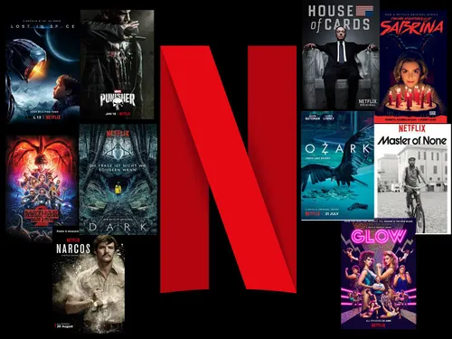
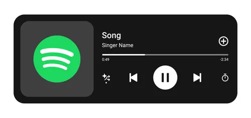
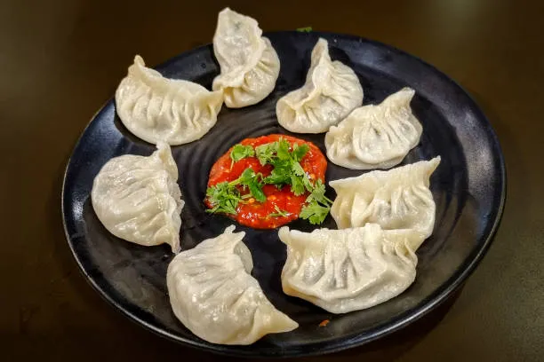
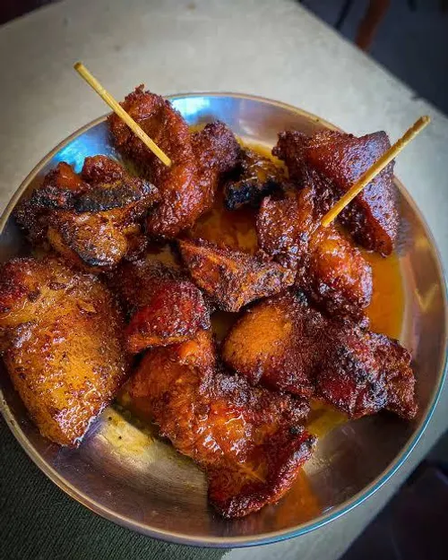
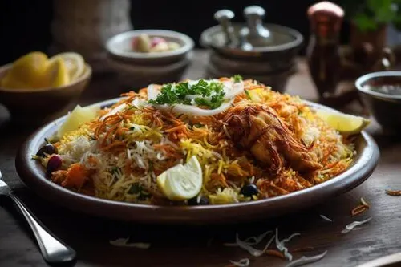

I am Shishir Gharti Magar. I am 19 years young and am currently in Kathmandu for studying.
I have finished my SLC and came to Kathmandu, the capital of Nepal for studies.
I am currently living in a hostel. I have a small family of four back in my hometown, Ghorahi, Dang.
I am a good guy who understands the importance of studes, values and norms of the society
and respect and love for others. I am currently preparing for IOE entrance and planning to study
my bachelors in Kathmandu.